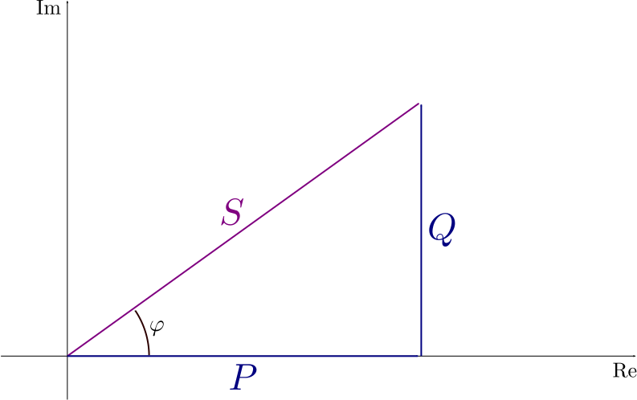

Glossary¤
This glossary provides definitions for common terminology used in the Frequenz SDK, focusing on microgrid components, metrics, measurements, and power-related terms.
Common Acronyms¤
AC¤
Alternating current. See the Wikipedia article for more details.
BMS¤
Battery management system. See the Wikipedia article for more details.
CHP¤
Combined heat and power. See the Wikipedia article for more details.
DC¤
Direct current. See the Wikipedia article for more details.
EV¤
Electric vehicle. See the Wikipedia article for more details.
PSC¤
Passive sign convention. See the Wikipedia article for more details.
PV¤
Photovoltaic. See the Wikipedia article for more details.
In the SDK it is normally used as a synonym for solar panel.
SoC¤
State of charge. See the Wikipedia article for more details.
SoP¤
Microgrid¤
A local electrical grid that connects a set of different types of components together. It can be connected to the public grid, or be completely isolated, in which case it is known as an island.
Component Category¤
The category components of a microgrid belong to.
Components of the same category have the same characteristics (for example offer the same set of metrics).
Battery¤
A storage system for electrical energy.
CHP Plant¤
A generator that produces combined heat and power (CHP). Usually powered via combustion of some form of fuel.
Converter¤
Generally refers to DC-to-DC converter.
DC-to-DC Converter¤
An electronic circuit or electromechanical device that converts a source of DC from one voltage level to another.
EV Charger¤
A station for charging EVs.
Electrolyzer¤
A device that converts water into hydrogen and oxygen.
Grid¤
A point where the local microgrid is connected to the public electricity grid.
Inverter¤
A device or circuitry that converts DC electricity to AC electricity.
Meter¤
A device for measuring electrical metrics (for example current, voltage, etc.).
PV Array¤
A collection of PV panels.
Pre-charge module¤
A device that gradually ramp the DC voltage up to prevent any potential damage to sensitive electrical components, like capacitors.
While many inverters and batteries come equipped with in-built pre-charging mechanisms, some may lack this feature. In such cases, external pre-charging modules can be used.
Relay¤
A device that generally have two states: open (connected) and closed (disconnected).
They are generally placed in front of another component, e.g., an inverter, to control whether the component is connected to the microgrid or not.
Sensor¤
A device for [measuring](#measurement] ambient metrics (for example temperature, humidity, etc.).
Solar Panel¤
A panel with PV cells that generates DC electricity from sunlight.
Wind Turbine¤
A device that converts the wind's kinetic energy into electrical energy.
Component¤
A device (of a particular category) within a microgrid.
Component ID¤
A numeric identifier uniquely representing an instance of
a component in a particular microgrid. It is always
of type int.
For example, a battery with a component ID of 5.
Island¤
A microgrid that is not connected to the public electricity grid.
Passive Sign Convention¤
A convention for the direction of power flow in a circuit. When the electricity is flowing into a component the value is positive, and when it is flowing out of a component the value is negative.
Component Data¤
Metric¤
A quantifiable attribute of a component.
For example, the metric capacity of a battery.
Measurement¤
An individual numeric value obtained from a metric of
a component instance. It is consistently of type float, but it
is often expressed in specific units.
In the context of a sample, this is commonly referred to as a sample value.
For example, a measurement of the capacity of a battery with component ID 5 can be 400, typically measured in Watt-hours (Wh).
Timestamp¤
A specific point in time, always represented as a datetime with a timezone
attached.
For example, 2022-01-01 22:00:00.000 UTC.
Sample¤
A measurement recorded at a particular timestamp,
typically represented as a tuple (timestamp, value).
For example, recording a measurement of 400 from the capacity of a battery at
2022-01-01 22:00:00.000 UTC would constitute a sample (2022-01-01
22:00:00.000 UTC, 400).
Sample Value¤
A measurement stored in a sample.
Time Series¤
A sequence of samples, often organized by timestamp and typically with regular intervals. However, irregular (event-based) time series are also possible.
For example, a time series representing measurements of a battery's capacity at 2022-01-01 22:00:00.000 UTC every second for 5 seconds would appear as follows:
(2022-01-01 22:00:00.000 UTC, 400)
(2022-01-01 22:00:01.000 UTC, 401)
(2022-01-01 22:00:02.000 UTC, 403)
(2022-01-01 22:00:03.000 UTC, 402)
(2022-01-01 22:00:04.000 UTC, 403)
Timeseries¤
Same as time series.
Metric ID¤
An identifier for a component's metric, typically
a string (str).
Components belonging to the same category have the same set of metric IDs.
For example, the metric ID for the capacity of a battery is simply
capacity.
Time Series ID¤
An identifier for a time series originating from
a metric of a specific component. Typically a string (str) derived
from the tuple (component ID, metric ID) for
components.
For example, a time series for the capacity of a battery with component ID
5 has the ID (component_id, metric_id) (or
f"{component_id}_{metric_id}").
Timeseries ID¤
Same as time series ID.
Metrics¤
All metrics related to power, energy, current, etc. use the PSC to determine the sign of the value.
Consumption¤
The amount of electricity flowing into a component. It is the clipped positive value when using the PSC, so if the electricity is flowing out of the component instead, this will be zero.
Gross Consumption¤
Consumption before accounting for any local generation from solar, wind or CHP.
Instantaneous Power¤
Same as power.
Load¤
Typically refers to a device that consume electricity, but also to the amount of electricity consumed by such a device. In a microgrid context, it is often used to refer to all the electrical devices that are doing active work, for example a light bulb, a motor, a cooler, etc.
When using the PSC, this is the same as consumption and it is a positive value. If a load generates electricity instead, it is a negative value but it wouldn't typically be called a load.
Net Consumption¤
This term traditionally refers to the difference between the gross consumption and the local generation (like PV production). It is the electricity consumption that needs to be provided by the battery or from the public grid.
Net Load¤
Same as net consumption.
Power¤
The rate of energy transfer, i.e. the amount of energy transferred per unit of time. It is typically measured in Watts (W).
For AC electricity, there are three types of power: active, reactive, and apparent (P, Q and |S| respectively in power triangle).
See the Wikipedia article for more information.
Power Triangle¤
The visual representation of the relationship between the three types of AC power and phase of voltage relative to current.

(CC-BY-SA 3.0, Wikimedia Commons)
{kind=link}
Active Power¤
The AC power that is actually consumed by the load. It is the real part of the apparent power, P in the power triangle.
Apparent Power¤
The AC power that is actually supplied to the load. The magnitude of the vector sum of the active and reactive power, |S| in the power-triangle.
Phase of Voltage Relative to Current¤
The angle of difference (in degrees) between current and voltage in an AC circuit, φ in the power triangle.
Power Factor¤
The ratio of real power to apparent power in an AC circuit. Can be obtained by computing the cosine of φ, in the power triangle. See the Wikipedia article for more details.
Reactive Power¤
The AC power that is not consumed by the load, but is alternately stored and returned to the source. It is the imaginary part of the apparent power, Q in the power triangle.
Real Power¤
Same as active power.
Production¤
The amount of electricity flowing out of a component. It is the clipped negative value when using the PSC, so if the electricity is flowing into the component instead, this will be zero.
Residual Consumption¤
In microgrid context sometimes used as the remaining difference between the net consumption and the battery power, i.e. what we define as grid power.
Residual Load¤
Same as residual consumption.
State of Charge¤
The level of charge of a battery relative to its capacity, expressed in percentage points. Calculated as the ratio between the remaining energy in the battery at a given time and the maximum possible energy under similar health conditions. Source
State of Power¤
The ratio of peak power to nominal power. Peak power is the maximum power that can be sustained for a specific duration without violating preset operational design limits on battery voltage, SoC, power, or current.
This indicator is crucial to ensure that charge or discharge power remains within specific limits, optimizing the battery's lifespan. It is particularly useful in peak power applications to define battery conditions for substantial charges or discharges.
The state of power depends on the state of charge, battery capacity, initial characteristics, chemistry, and battery voltage, as well as external factors like temperature and humidity, which can also have a significant impact on it. Source